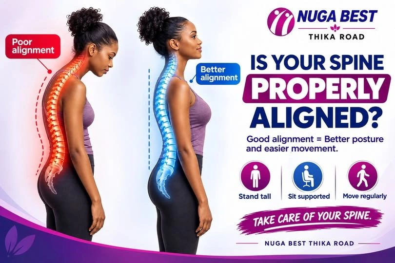
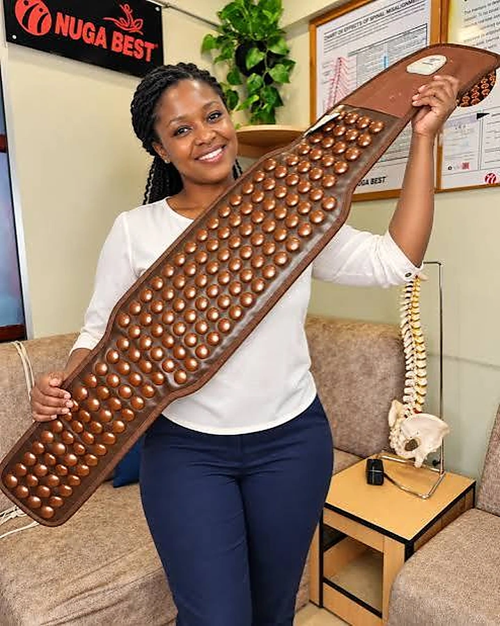

POSTURE & MOVEMENT
Everyday posture awareness
Practical reminders for sitting, standing and moving comfortably.
Nuga Best educational photographs and posters, displayed in full.

Practical reminders for sitting, standing and moving comfortably.

Learn about the genuine mats, belts and accessories in the collection.